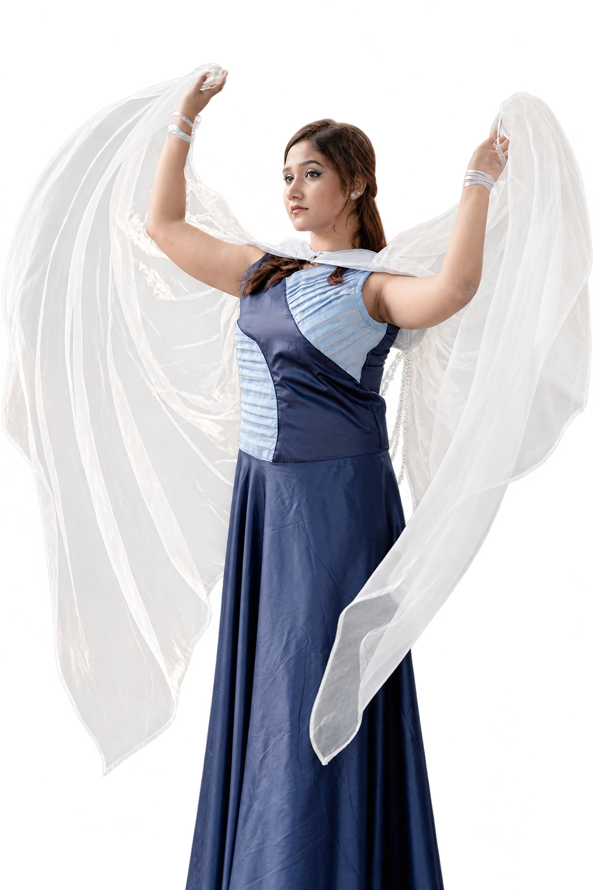

Selected look 01 / Hridita Huq
In motion
Pleated blue dress
A navy dress with a pale-blue pleated bodice and a long skirt. The sheer white wrap adds soft layers and movement.
The look
Sculpted pleats
Pale-blue folds bring texture to the bodice.
Flowing shape
A long navy skirt lets the silhouette move.
Sheer layers
A white wrap frames the look with soft folds.
The palette
Navy / pale blue / soft white

Structure in the pleats. Softness in every fold.